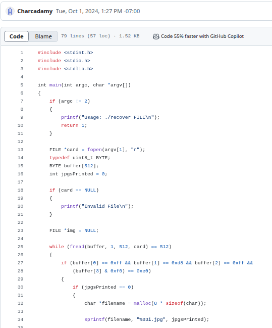
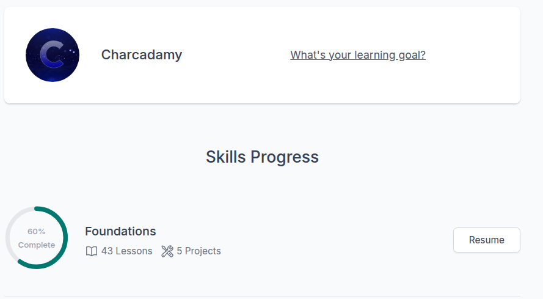
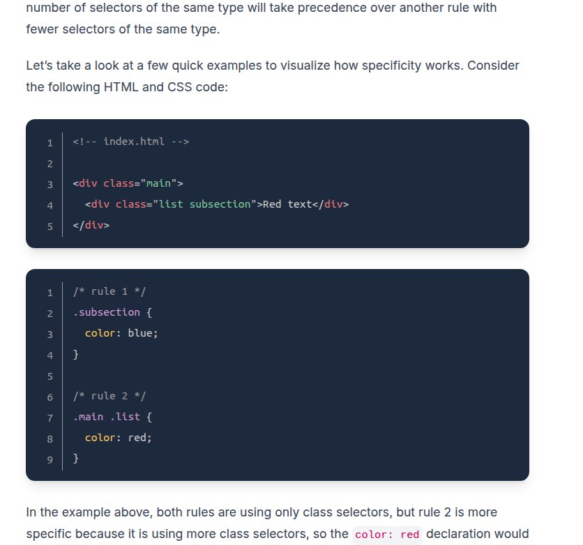
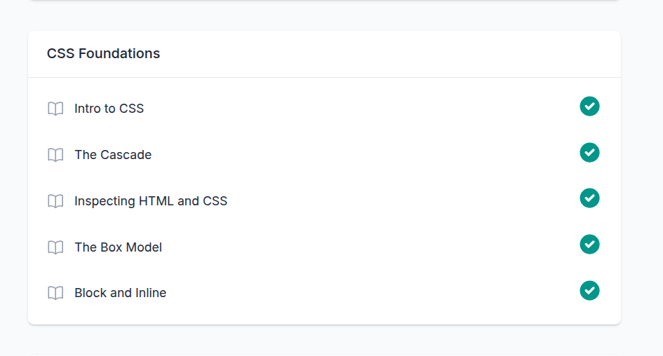
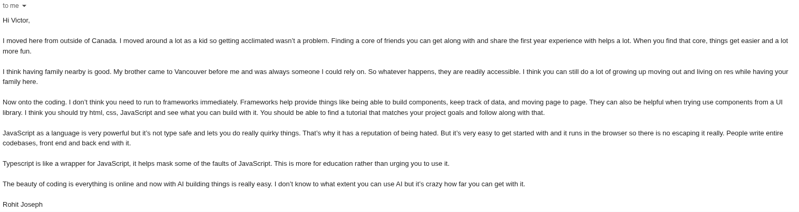
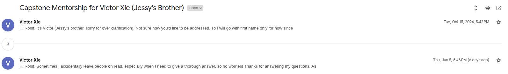

I knew I wanted to make my own personal portfolio website ever since I considered a career in programming!
Initially, I planned on doing the CS50 course from Harvard.
After banging my head against the low-level memory courses, I swapped to the odin project.
This was fun but not really related to making a website...
I managed to work my way through the odin project in April.
Which lead me to building this site!
Inorder to bulid this website, I had to learn a couple fundamental things.
First, I had to get comfortable with using a virtual machine to run linux. As a result, I also had to learn how to use bash and navigate the command line well!
The second thing was Git. Essentially, it is version control software that allows people to download copies of a database of code to work on it concurrently without affecting eachother
Then, I had to learn about HTML; Although people may call it a programming language, it doesn't really encode any 'logic' only the 'format' of what a website looks like.
HTML's main job is to provide a structure specifically, not how the visuals look. Try deleting the 'CSS' stylesheet to see!
CSS is the language that gives the website it's actual look. All the colours, fonts, and a lot of the layout is determined by it.
Right click my code to inspect! Make a change and show how Git works (explain it too!)
The Odin Project was very helpful, offering step by step guides on the fundamentals.
 If I ever got stuck, google was my best friend, but what about AI? For the project, I kept my usage of it to 0%.
For the more serious, big picture, and real-life questions, I asked my mentor!
Here, I had a university question, as well as a systems design level related one.
My mentor helped guide me design wise - but just the nature of programming made it redundant to ask him unless I got seriously stuck.
He was a big help and I appreciate that he's been my mentor since October!
Overall, I really enjoyed learning how to make a website! This site is far from polished, however. I'm definitely thinking of working on it over the summer!
I also learned that I'm a pretty resilient and persistent dude when it comes to programming.
Making a 'somewhat' polished product (I'm being very liberal with the term 'polished') has always been a big roadblock for me. I'm glad I overcame it.
I definitely think I could have managed my time more effectively. Pivoting so late to work through the Odin Project meant I didn't have much time.
Now I'm even more inclined to pursue web development and programming as a career - although I'd like to use my first year in university to try out a bunch of different things.